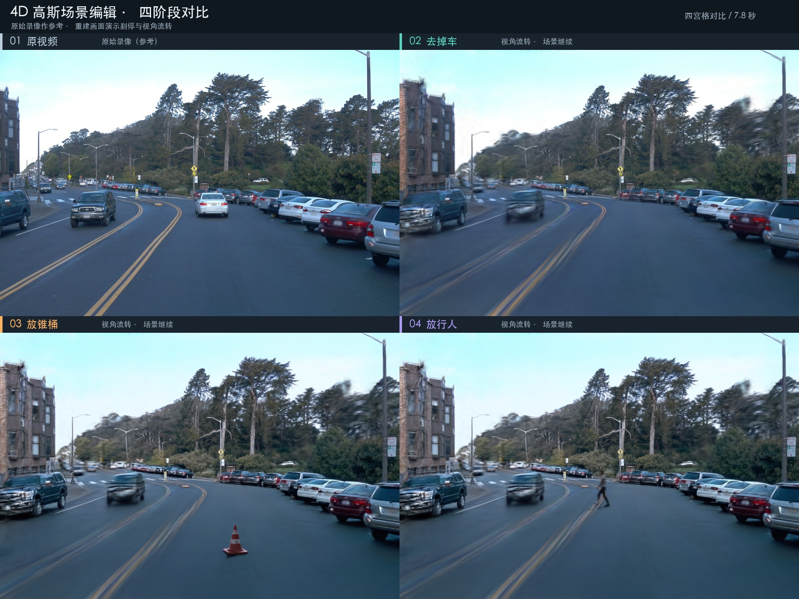

4D Gaussian
保留闭环，准备下一次复现。
从真实多相机街景，到去车后的动态高斯，再到锥桶、行人、阴影与两遍 NR。把已完成的视觉制作链、精确来源和迁移边界放在一起。
证据截止 2026-10-28；本次本地核对 2026-10-29。此手册和配套 JSON 是清单与说明，模型、代码、视频等大文件仍在原仓库／归档中。

先确认复现的是哪条链
这里的“闭环”是数据准备 → 模型训练 → 动态渲染 → 原生资产合成 → 后处理 → 视频与证据验收的离线链路。当前实际方法为 PVG（Periodic Vibration Gaussian）；“4DGS”是项目统称，不能把其他同名方法的实现或能力套进来。
仍待完成：用户最终视觉验收、真实车辆刹车与碰撞物理、实时生产引擎接入、新机器恢复验证。
| 线路 | 模型与输入 | 结果与边界 |
|---|---|---|
| 0145050 · 10/19–10/22 | 8k 试跑 → 30k 原分辨率 PVG；49×3 输入 | 重建指标与阴影研究。V27 是部分改善参考；V28/V29 被拒绝，V31/V32 也没有通过干净场景验收。 |
| 0017085 · 10/22–10/26 | 18k PVG；147 张编辑输入；1,522,367 高斯 | 实际最新视频的背景。白色前车视觉移除通过演示目的；整体写实质量未通过。 |
| 源码归档 · 10/28 | feature/4dgs @ 7a0a551d8e15 | 20 个阶段；原脚本绝对路径保留，仍需环境和数据恢复。 |
实际流程与各步入口
历史基线：0145050 原场景重建4090 / Linux GPU 容器
输入：49 个时刻 × 3 个相机，RGB + 标定 + ego pose + LiDAR + sky masks；1920×1280。
输出：30,000 步 Gaussian checkpoint 与环境光 checkpoint、留出 RGB 指标、固定相机时间回放。
# 原容器 /work 挂载和依赖已恢复后；这是历史入口说明
cd /work/full-20261020
python prepare_full.py
python prepare_lpips.py
python run_full.py --iterations 30000
python render_full.py只作为 0145050 基线。111 train / 36 held-out RGB；LiDAR 初始化使用全部时刻。不是论文全 benchmark，也不是 RGB-only。
E01 E03 E05当前主线：0017085 去车输入处理4090 / StreetUnveiler 实验环境
输入：同一个官方预处理包内的 0017085；49×3 张 960×640 图像。选中同向白色前车，保留对向交通与路边车辆。
输出：views、semantic masks、SAM target masks、edited-zits 图像、去除目标车回波的 LiDAR 与推测道路支持。
# 入口按脚本依赖顺序整理；须先复核目标与补图，保留原验收记录
export SEQ=/work/models/new-sequence-20261022-01a161b2
cd "$SEQ/scripts"
/work/venv/bin/python prepare_data.py
/work/venv/bin/python segment.py
/work/venv/bin/python select_target.py
/work/venv/bin/python ground_points.py
# 在 selection-reviewed.json 确认目标后
/work/venv/bin/python prepare_clean_inputs.py
/work/venv/bin/python inpaint_inputs.py --all
/work/venv/bin/python repair_zits_outliers.pyprepare_clean_inputs.py 仍生成道路几何与准备数据；其 atlas 外观候选被拒绝。实际训练用 edited-zits，而不是 atlas 候选。审查记录不能靠创建空文件绕过。
E07 E09 E10 E13去车后 PVG 训练与对照渲染4090 / /work/venv/bin/python
输入：经审查的 edited-zits、标定、位姿、处理后 LiDAR、sky masks。
输出：18,000 步 checkpoint，1,522,367 个高斯；17.9 秒主视频及三相机／横移检查视频。
# 仅重训时需要；直接复现成片优先恢复已有模型
export SEQ=/work/models/new-sequence-20261022-01a161b2
/work/venv/bin/python "$SEQ/scripts/queue_stage.py" training \
/work/venv/bin/python "$SEQ/scripts/train_clean.py" --iterations 18000
/work/venv/bin/python "$SEQ/scripts/queue_stage.py" render \
/work/venv/bin/python "$SEQ/scripts/render_demo.py"train_clean.py 要求 edited-input-reviewed.json；147 视图全部参与训练。编辑区外 29.39 dB 是样本内统计，不能当作隐藏背景真实度或留出集指标。
E07 E09 E11 E12 E13 E14共享相机轨迹与独立场景时钟Mac 准备；4090 渲染 RGB / depth
输入：0017085 的 18k 模型、env_light、experiment.yaml；poses / K / scene time。
输出：234 帧高斯背景、深度与 alpha；3.9 s 减速，5.1–6.5 s 固定机位，之后 ±0.35 m / ±4° 观察。
# Mac：在全新的恢复目录准备本轮相机和资产输入
export RUN="$ARCHIVE_ROOT/2026-10-26/gaussian-brake-live-scene"
python3 "$RUN/scripts/prepare_brake_live.py"
# 将 inputs/gaussian-poses.json 同步到 GPU 的 OUT/inputs
# GPU：原环境使用以下固定路径；重构前需按路径表恢复或逐项配置
/work/venv/bin/python /work/models/brake-live-scene-20261026-01a161b2/scripts/render_gaussian_layers.py
# 将 backgrounds/ 和 depth/ 回收到 "$RUN/gaussian/"场景原观察期只有 4.8 s。停车后场景时钟约为 0.15909 倍；42 个固定机位帧仍各不相同，但这不是正常速度交通外推。
E19 E20 E25原生 UE 资产、遮挡与接地阴影Mac / UE 5.8.2
输入：Wizard 锥桶与 Nathan 原生 UE 包、相机、地面估计、高斯 RGB/depth、240 Hz 步态。
输出：锥桶 702 份原生导出；行人 2,307 份原生导出；差分接地阴影、深度遮挡和线性光合成。
export RUN="$ARCHIVE_ROOT/2026-10-26/gaussian-brake-live-scene"
PYTHONPATH="$RUN/deps" python3 "$RUN/scripts/native_full_chain.py"
# 行人：生成 7 个曝光采样序列的 1,638 份合成帧
PYTHONPATH="$RUN/pedestrian/deps" python3 "$RUN/pedestrian/scripts/run_compositors.py"run_ue.py 依赖 Wizard simcore.ue_gpu.LaunchLease、UE 固定路径和 Xcode。导出完整性与进程退出码分别保留；不是跨平台 UE 包已通过验收。
E25 E27两遍 NR、运动模糊与最终打包Lianos RTX 5060 + Mac
输入：锥桶 1 个序列；行人 7 个 shutter 序列；每序列 234 帧，两次连续 NR。
输出：锥桶／行人各 7.8 s，四宫格 7.8 s，顺序合辑 31.2 s。
# 先恢复 Lianos runtime、scripts、deps；下列包装器还会通过 ssh/rsync 调用它
export RUN="$ARCHIVE_ROOT/2026-10-26/gaussian-brake-live-scene"
python3 "$RUN/cone/scripts/finish_cone.py"
python3 "$RUN/pedestrian/scripts/run_nr_when_ready.py"
python3 "$RUN/pedestrian/scripts/finish_pedestrian.py"
python3 "$RUN/scripts/check_live_traffic.py"
python3 "$RUN/scripts/package_and_compare.py"
python3 "$RUN/scripts/validate_final.py"NR 是捕获后 Feature 18 处理链，第二遍读取第一遍真实输出；不是 UE 原生 DLSS 插件。共 16 passes / 4,128 evaluations（含 warmup）。禁止把旧 /dev/shm 临时目录当永久归档。
E25 E26 E28 E29以上是根据真实脚本与记录整理的入口。命令未在本次执行；须在独立恢复目录完成路径、输入与环境检查后使用。部分脚本含旧目录、硬链接和非幂等创建，不能覆盖已有结果直接重跑。
验证结果：历史与本次分开
| 证据日期 | 核实的结果 | 解释范围 |
|---|---|---|
| 2026-10-20 | 0145050 / 30k：PSNR 28.3467 dB，SSIM 0.861208，LPIPS(VGG) 0.281895；36 个 held-out RGB 视图。E03 E05 | 3,002,488 个高斯；训练 3,177.04 s。平均 45.37 FPS 只计渲染、不计编码。LiDAR 来自全时刻；不是完整论文复现。 |
| 2026-10-22 | 0017085 / 18k：训练 887.50 s，峰值 allocated 4.19095 GiB；3 段视频总计 552 帧全部解码。E07 E11 E14 | 选定白色前车在 49 个目标裁剪中不再可见。新视角仍有车辆重影、树木和边缘失真；补图与道路支持包含推测。 |
| 2026-10-26 | 相机与场景时钟：固定机位区间 42/42 个高斯 RGB 帧唯一；矩阵偏差 0。E19 E20 | 场景时间在固定机位区间推进约 0.2174 s；停车后 0.15909 倍慢放，图像运动不是实车速度测量。 |
| 2026-10-26 | 原生与 NR：702 + 2,307 个 UE 导出；769 个骨骼样本；16 NR passes / 4,128 次评估含 warmup。E25 | 两遍逐帧真实衔接；锥桶 41 个静止帧零模糊。UE 导出成功与进程干净退出是不同结论。 |
| 2026-10-28 | 旧归档检查：12 项回归通过、120 个 shell / 3 个 JS 语法检查、4 段视频本地解码与远端哈希一致。E32 E33 | 这是历史记录。本次未重新执行这些 GPU、远端或新机检查。 |
| 2026-10-29 | 本次检查：2,477 份快照与原文件一致；496 Python / 1,706 JSON 解析通过；128 份外部证据哈希一致；4 段最新视频完整解码。 | 只读本地检查；最新远端归档、权重可用性和镜像冷拉取尚未复核。 |
最新交付文件
| 文件 | 媒体参数 | 本次检查 |
|---|---|---|
| cone-brake-live.mp4 | 960 / 640 · 7.800000 s | SHA256 一致 · 完整解码 |
| pedestrian-brake-live.mp4 | 960 / 640 · 7.800000 s | SHA256 一致 · 完整解码 |
| 四宫格预览.jpg | 内嵌预览图 | SHA256 一致 |
| 四阶段-刹停与视角流转-四宫格.mp4 | 1920 / 1440 · 7.800000 s | SHA256 一致 · 完整解码 |
| 四阶段-刹停与视角流转-顺序合辑.mp4 | 1440 / 1080 · 31.200000 s | SHA256 一致 · 完整解码 |
成片位于 2026-10-26/gaussian-brake-live-scene/delivery/ 与 2026-10-26/gaussian-four-stage-brake-comparison/delivery/。四宫格为 1920×1440 / 234 帧 / 7.8 s；顺序合辑为 1440×1080 / 936 帧 / 31.2 s。配套 JSON 的 latest_outputs 保留完整本地路径、大小和 SHA256。
旧版 gaussian-four-stage-comparison 已被替代。已发布的 17.9 s 去车对比视频属于 0017085 更早成果，不能代替最新刹停／视角流转交付。
模型、外部输入与来源
必须将 Gaussian 与对应环境光权重成对恢复，保留同一份配置和相机。以下路径来自历史远端记录，本次没有访问远端重算哈希。
| 模型 | 组件 | 路径与历史 SHA256 |
|---|---|---|
| waymo-0145050-pvg-30000 | checkpoint | 4090:/home/ubuntu/experiments/driving-4dgs-20261019-01a152c4/full-20261020/model/chkpnt30000.pthebdb25f36982479651a71ab86411390780b7f086e868ad565f8f7f2f35c87f5d |
| waymo-0145050-pvg-30000 | environment_checkpoint | 4090:/home/ubuntu/experiments/driving-4dgs-20261019-01a152c4/full-20261020/model/env_light_chkpnt30000.pthcd4b9faeeee937aa756027790fe07fa3cbfaf70e3a7bf0d9269bbbc6d7ede340 |
| waymo-0017085-removal-pvg-18000 | checkpoint | 4090:/mnt/kps-data/codex-experiments/streetunveiler-20261021-01a152c4/models/new-sequence-20261022-01a161b2/model/chkpnt18000.pthff5d50d095da909d0033a9529a746ae5feb1363cf63ce28d9cfda514260fef55 |
| waymo-0017085-removal-pvg-18000 | environment_checkpoint | 4090:/mnt/kps-data/codex-experiments/streetunveiler-20261021-01a152c4/models/new-sequence-20261022-01a161b2/model/env_light_chkpnt18000.pth84359866bda47a839633f15ae89e08534ceefb5849d03e48a6f923b00c81bd88 |
12 项去重来源资产与许可记录完整下载路径、大小与摘要见 JSON
| 资产 | 来源页 | 登记的许可状态 |
|---|---|---|
| PVG official preprocessed Waymo driving scenes | https://github.com/fudan-zvg/PVG | Archive-specific licence and preprocessing attribution not stated beside the download; pending verification. PVG code licensing is separate from the Waymo source data. |
| VGG16 ImageNet1K V1 evaluation backbone | https://pytorch.org/vision/stable/models/generated/torchvision.models.vgg16.html | Weight-specific redistribution terms not verified; used only for local research evaluation. |
| LPIPS VGG v0.1 evaluation weights | https://github.com/richzhang/PerceptualSimilarity/blob/master/lpips/weights/v0.1/vgg.pth | Weight-specific redistribution terms not verified; used only for local research evaluation. |
| SegFormer B5 Cityscapes semantic segmentation weights | https://huggingface.co/nvidia/segformer-b5-finetuned-cityscapes-1024-1024 | Weight-specific terms pending verification; isolated research trial, no redistribution. |
| SAM occluded-vehicle mask refinement candidate | https://huggingface.co/facebook/sam-vit-base | Pinned model card explicitly declares Apache-2.0. |
| ZITS++ HAWP line detector weights | https://github.com/ewrfcas/ZITS-PlusPlus | Weight-specific terms pending verification; isolated research trial, no redistribution. |
| ZITS++ 512 inpainting model bundle | https://github.com/ewrfcas/ZITS-PlusPlus | Weight-specific terms pending verification; isolated research trial, no redistribution. |
| 锥桶 · 轻度磨损 | 来源页未记录；本地用户提供 | 未记录，需补证 |
| Nathan Animated 003 Walking | https://renderpeople.artstation.com/store/pqGL/nathan-animated-003-walking-3d-man | Specific licence text not present in retained original evidence; pending verification. Existing free sample provenance retained; no new download. |
| LeftRefill Stable Diffusion 2 inpainting base weights | https://github.com/ewrfcas/LeftRefill | Weight-specific terms pending verification; isolated research trial, no redistribution. |
| OpenCLIP ViT-H-14 text encoder dependency | https://huggingface.co/laion/CLIP-ViT-H-14-laion2B-s32B-b79K | Pinned model card explicitly declares MIT. |
| Mask2Former vehicle-mask repair candidate | https://huggingface.co/facebook/mask2former-swin-tiny-cityscapes-panoptic | Weight-specific terms pending verification; isolated research trial, no redistribution. |
12 项是全部历史阶段去重后来源资产，其中包含被替代的模型候选；并非每项都用于最新成片。SAM 的 pinned model card 记录了 Apache-2.0；其他未确证许可保持未知。Nathan 原 FBX 路径未保留／已缺失的历史限制继续保留，已验证的 UE 原生包应优先备份。
新机器恢复路线
快速恢复的首选是取得固定源码 + 已训练权重 + 已有原生资产，先复现少量帧，再扩展到整条链。当前尚无已经验证的一键跨平台安装包。
# 为恢复后的实验目录设置路径，替换为新机实际目录
export ARCHIVE_ROOT="/path/to/restored/Codex"
# 在新建且无同名目录的位置执行；凭据由现有账号／凭据助手提供
git clone --branch feature/4dgs https://gitlab.fftaicorp.com/infra-public/fourier-sim-wizard.git fourier-sim-wizard-4dgs
cd fourier-sim-wizard-4dgs
git checkout --detach 7a0a551d8e15b47bb9442821ec95182890fae119
python3 research/driving_4dgs/verify_snapshot.py
# 仅用于源码与 CPU 逻辑检查；需要相应测试依赖
python3 -m pytest -q tests/test_research_source_inventory.py tests/test_web_asset_reuse_registry.py tests/test_git_payloads.py
python3 scripts/driving_shadow_fusion/check_photometry.py本次快照工作树为干净状态；原 dev/wizard2.0 工作区有未提交内容，包含 29 条与 4DGS 相关的未跟踪路径。不要把原工作区当作与此提交相同的可重建基线。完整分支、提交与相关状态见 JSON repositories。
| 环节 | 历史环境 / 资源门限 | 新机必须确认 |
|---|---|---|
| PVG 训练 | Python 3.11.10 / PyTorch 2.5.1+cu121 / CUDA 12.1；4090 24 GiB；初始空闲显存 ≥16,000 MiB。 | 重建 rasterizer、simple-knn、nvdiffrast；核对 CUDA、编译器与 GPU 架构。8.9 是原 4090 架构设置，不宜盲目套用其他卡。 |
| 0017085 数据与训练 | 可用 RAM ≥28 GiB、输出空闲盘 ≥30 GiB；runtime guard 保留。 | 全部数据/权重已取回；输入审查记录与 SHA256 一致；共享 GPU 没有被本任务抢占。 |
| UE 原生 | UE 5.8.2-56702186 / Mac / Xcode / Wizard LaunchLease。 | 原生资产、材质、动画、Content 与 Config 完整；其他 OS 的 UE 路径和渲染结果单独验证。 |
| NR 两遍 | Lianos / RTX 5060 / Feature 18；指定已有 image digest。 | NR runtime 与可执行文件来源、镜像可用性、GPU 支持和逐帧衔接。不要据此假定任意 NVIDIA 机器均可直接运行。 |
路径和宿主／容器映射表配置化前逐项还原
| 命名 | 原路径 | 作用 |
|---|---|---|
| SOURCE_ROOT | /Users/pingy/.codex/worktrees/publish-4dgs/fourier-sim-wizard | 已提交且本次干净的源码快照 |
| ARCHIVE_ROOT | /Users/pingy/Documents/Codex | 按 YYYY-MM-DD/实验名 重建实验目录结构 |
| GPU_BASE_0145050 | 4090:/home/ubuntu/experiments/driving-4dgs-20261019-01a152c4 | 官方包、基线 8k/30k、缓存与记录 |
| GPU_MODELS | 4090:/mnt/kps-data/codex-experiments/streetunveiler-20261021-01a152c4/models | 0017085 18k、分割与补图权重；容器映射为 /work/models |
| GPU_NEW_SEQUENCE | /work/models/new-sequence-20261022-01a161b2 | 新序列脚本中的 ROOT |
| GPU_RENDER_OUT | /work/models/brake-live-scene-20261026-01a161b2 | 高斯背景和深度输出 |
| UE_EDITOR | /Users/Shared/Epic Games/UE_5.8/Engine/Binaries/Mac/UnrealEditor.app/Contents/MacOS/UnrealEditor | 原生 UE 5.8.2 渲染；迁移时需配置 |
| NR_SCRATCH | lianos:/dev/shm/codex-brake-live-20261026-01a161b2 | 历史临时工作目录，已清理；新运行使用新目录 |
- 取得固定提交并验证源码快照
- 从现有归档恢复输入、权重、原生资产和 deps；验证哈希
- 映射所有绝对路径、跨日期依赖、host/container 路径
- 恢复对应版本 CUDA/PyTorch 扩展、UE、NR runtime
- 先重放少量帧并检查 RGB/depth/pose/clock 一致性
- 完成全部帧、逐帧 NR 衔接、视频解码、视觉检查后再接受新机复现
本次未登录 4090 或 Lianos、没有下载模型或镜像、没有运行训练、GPU 渲染或新机部署。镜像 tag 不是内容锁定；需保全实际 image digest / 导出包，NR 使用的 digest 已记录在 JSON。
备份、恢复与缺失边界
这次云空间保存的是清单与手册。真正的可恢复性还依赖代码、模型、输入和原生资产的独立备份。
| 历史归档位置 | 文件条目 | 逻辑字节 |
|---|---|---|
4090:/mnt/kps-data/codex-experiments/brake-live-scene-20261026-01a161b2 | 14,211 | 7,095,544,361 |
4090:/mnt/kps-data/codex-experiments/four-stage-brake-comparison-20261026-01a161b2 | 776 | 633,751,854 |
两份最新归档合计 14,987 个条目 / 7.73 GB。这是最新中间产物归档，不包含全部早期训练数据与模型，不能用作项目总大小。远端存在性仅由历史记录支持，本次未重新连接验证。
- 固定提交和相关未提交内容的独立补丁/副本
- 官方数据包及 0017085 处理后的 views、mask、edited-zits、LiDAR、审查记录
- Gaussian checkpoint 与匹配的 env_light checkpoint、experiment.yaml、cameras.json
- 分割/补图权重、PVG/rasterizer/nvdiffrast 源码及实际环境 lock/freeze
- UE Content/Config/uproject、步态与材质/纹理、NR 可执行文件和匹配 image
- 最终视频、输入/输出逐帧哈希、manifest、质量审查、时间与资源记录
# 从现有归档复制到新的独立目录；不带 --delete
export RESTORE_ROOT="/path/to/new-restore"
mkdir -p "$RESTORE_ROOT/2026-10-26/gaussian-brake-live-scene"
rsync -a --partial 4090:/mnt/kps-data/codex-experiments/brake-live-scene-20261026-01a161b2/ "$RESTORE_ROOT/2026-10-26/gaussian-brake-live-scene/"
# 另行恢复四阶段归档、18k 模型目录、数据和 UE/NR 依赖。
# 按 4dgs-assets.json 的 remote_archive_manifests[].contents 逐文件校验。archive_verified.py 带清理动作，恢复流程不应直接调用它。下一次重构从这些边界开始
| 模块边界 | 必须保留的契约 |
|---|---|
| 配置和存储路径 | scene_id / dataset_root / model_root / output_root / host mapping / engine path；保存独立 run_id，替换日期目录硬编码和 deps 软链接。 |
| 数据准备与范围审查 | 每图 uid、frame、camera、K、metric c2w、timestamp、source hash、target/retained/uncertain masks；审查成为显式门禁。 |
| PVG 模型与渲染 | 不可分割的 checkpoint + env_light + config + source fingerprint；输出 RGB/depth/alpha 及尺度、相机和场景时钟。 |
| 原生资产与合成 | 保持米/厘米转换、相机矩阵、深度约定、sRGB/linear、premultiplied alpha、差分阴影和 shutter 采样一致。 |
| NR 后处理 | pass n output SHA256 = pass n+1 input SHA256；资源门限、真实运行 receipt 和失败恢复分别记录。 |
| 验收与存储 | 独立记录技术检查、视觉候选、用户验收、物理验收；原记录只追加版本，不覆写已拒绝候选。 |
先把绝对路径和跨日期依赖变为配置，冻结已有输入与输出哈希，再抽取可复用步骤。保留原版结果作为回归参考，新增 run_id 与新输出目录。把“技术通过”“视觉候选”“用户接受”“物理通过”设为独立字段。
0145050 阴影入口虽已配置化，仍依赖 legacy_pvg_0145050_adapter、特定 49 时刻 / 3 相机、道路坐标、目标框、保留区域和静态阴影标注。迁移到新路段必须重建这些证据；V32 外观修正也没有烘焙成通用可直接导入引擎的 checkpoint。
# 仅查看阴影实验最终命令（原环境内、替换配置路径后）
/work/venv/bin/python scripts/run_configured.py --config configs/waymo-0145050-sidewalk-v32.json --stage sidewalk-probe --candidate v32 --dry-run20 个阶段的索引
20 个阶段
| 阶段 | 文件 | 归档角色 |
|---|---|---|
2026-10-19/driving-4dgs | 40 | 历史实验 / 依赖 |
2026-10-20/driving-4dgs-engine-edit | 45 | 历史实验 / 依赖 |
2026-10-20/driving-4dgs-full | 22 | 历史实验 / 依赖 |
2026-10-21/streetunveiler-0145050 | 104 | 历史实验 / 依赖 |
2026-10-21/streetunveiler-repair-0145050 | 61 | 历史实验 / 依赖 |
2026-10-22/gaussian-cone-lianos-dlss5x2 | 67 | 历史实验 / 依赖 |
2026-10-22/gaussian-cone-light-shadow | 58 | 历史实验 / 依赖 |
2026-10-22/gaussian-cone-motion-blur | 22 | 历史实验 / 依赖 |
2026-10-22/gaussian-pedestrian-crossing | 180 | 历史实验 / 依赖 |
2026-10-22/gaussian-removal-new-sequence | 35 | 历史实验 / 依赖 |
2026-10-22/gaussian-ue-cone-insertion | 26 | 历史实验 / 依赖 |
2026-10-22/truck-road-curb-0145050 | 464 | 历史实验 / 依赖 |
2026-10-23/gaussian-pedestrian-distant-entry | 268 | 历史实验 / 依赖 |
2026-10-23/gaussian-pedestrian-late-near-miss | 212 | 历史实验 / 依赖 |
2026-10-23/gaussian-pedestrian-only-motion-blur | 196 | 历史实验 / 依赖 |
2026-10-23/gaussian-pedestrian-smooth-gait | 202 | 历史实验 / 依赖 |
2026-10-26/gaussian-brake-live-scene | 249 | 最新交付候选 |
2026-10-26/gaussian-four-stage-brake-comparison | 9 | 最新交付候选 |
2026-10-26/gaussian-four-stage-comparison | 7 | 已被替代 |
2026-10-26/gaussian-pedestrian-continuous-drive | 188 | 历史实验 / 依赖 |
源码归档内的相对路径：research/driving_4dgs/runs/<日期>/<实验名>。原始位置和逐文件 SHA256 见 JSON 的 source_snapshot.files；大型生成证据见 external_evidence。
证据与阅读说明
手册结论来自下列本地原始记录。JSON 内 historical_evidence_records 保存完整必要记录、字节数与本次计算的文件 SHA256。来源网页和下载地址只是既有登记，本次没有重新检索其内容或许可。
E01 · experiment-record.json
/Users/pingy/Documents/Codex/2026-10-19/driving-4dgs/experiment-record.jsonSHA256 c7d260034668f194377309deb5d8e94f184b33fd1ea69d5d26e1e1befb2386d7
E02 · cuda-smoke.json
/Users/pingy/Documents/Codex/2026-10-19/driving-4dgs/cuda-smoke.jsonSHA256 b2ac854c54a9e0353f06ecdb8365bd6b2deb6332eb3f97e53fa852a2c3aaf503
E03 · experiment-record.json
/Users/pingy/Documents/Codex/2026-10-20/driving-4dgs-full/experiment-record.jsonSHA256 3d6682d41a2d43c14fe428ac1a0d7d78639d41b01b9ef430f4d3923f8371d9f4
E04 · data-manifest.json
/Users/pingy/Documents/Codex/2026-10-20/driving-4dgs-full/logs/data-manifest.jsonSHA256 03588d8dbf4e43e5515febe0731a1c8c6e39a8110efb617e030b77618e3eaa8d
E05 · evaluation-summary.json
/Users/pingy/Documents/Codex/2026-10-20/driving-4dgs-full/results/evaluation-summary.jsonSHA256 027bb732b16edf9db7d49dbc5ba56f4dd4fcfef99bb2217cbf4972d29108b525
E06 · video-validation.json
/Users/pingy/Documents/Codex/2026-10-20/driving-4dgs-full/results/video-validation.jsonSHA256 12fd216bd2c62e98a76304c4ae427fabb1a9502b3b03d8ea4de4b1347e8ebdac
E07 · run-plan.json
/Users/pingy/Documents/Codex/2026-10-22/gaussian-removal-new-sequence/run-plan.jsonSHA256 c963f04888d7b0fbcce17b2183cf979e9601cc011087369f1d8e84529ed79426
E08 · handoff.json
/Users/pingy/Documents/Codex/2026-10-22/gaussian-removal-new-sequence/handoff.jsonSHA256 fac8f8216155566707f60c38306bd565424ad4210ca8628fc7217af4765ff614
E09 · source-provenance.json
/Users/pingy/Documents/Codex/2026-10-22/gaussian-removal-new-sequence/logs/source-provenance.jsonSHA256 7169d048079f24d22b9fc3f241b51b4d5b8cd59e83c5fc5aa41c5c0476bd2348
E10 · data-receipt.json
/Users/pingy/Documents/Codex/2026-10-22/gaussian-removal-new-sequence/logs/data-receipt.jsonSHA256 6c88bd3bf247b19e3123f0a94f45e0f62c4a8dc7ea710df5302094fba25644ef
E11 · training-status.json
/Users/pingy/Documents/Codex/2026-10-22/gaussian-removal-new-sequence/logs/training-status.jsonSHA256 37b40ee1a374ead0f26ff578a1f8a1eb1a07f833116cd1446906b99cbac62300
E12 · training-probes.json
/Users/pingy/Documents/Codex/2026-10-22/gaussian-removal-new-sequence/logs/training-probes.jsonSHA256 90d10366de362397631b7ab4c9fd7a64acf2df57a5a5816dc6d3c5d61f093930
E13 · visual-review.json
/Users/pingy/Documents/Codex/2026-10-22/gaussian-removal-new-sequence/delivery/visual-review.jsonSHA256 fb74557c24bb2c2e9bce0343ecb7a1d9f76562695ae2ba0b31099f8978a29714
E14 · local-video-validation.json
/Users/pingy/Documents/Codex/2026-10-22/gaussian-removal-new-sequence/delivery/local-video-validation.jsonSHA256 9653a6daf3759e0afc20460b2f9436c7ce739bf6ed00742ec7f0d217d38a5694
E15 · visual-review.json
/Users/pingy/Documents/Codex/2026-10-22/truck-road-curb-0145050/exposure-fusion-20261022/delivery-v27/visual-review.jsonSHA256 a6b01a064fab480740e2f0ca6a3dbe7866e154471bcb5e3a6b201c19bae6a180
E16 · visual-review.json
/Users/pingy/Documents/Codex/2026-10-22/truck-road-curb-0145050/sidewalk-refine-v32-20261022/delivery-v32/visual-review.jsonSHA256 4200c24f6b03a978f85a455c7c9db4703ffc8770b32d0b236e24439a172a74fb
E17 · runtime-provenance.json
/Users/pingy/Documents/Codex/2026-10-23/gaussian-pedestrian-distant-entry/metadata/runtime-provenance.jsonSHA256 71c5faf1db752bccf940b6f74f58a13cd6b37a9109bb8df9043cf676569e468d
E18 · nr-runtime-validation.json
/Users/pingy/Documents/Codex/2026-10-23/gaussian-pedestrian-distant-entry/metadata/nr-runtime-validation.jsonSHA256 539348b888ba6ba24302484e7092e2635867c478daf223274356f8a32c950b8c
E19 · plan.json
/Users/pingy/Documents/Codex/2026-10-26/gaussian-brake-live-scene/metadata/plan.jsonSHA256 b70f029fd6e913464f16482fb8be3caa950a66aa8cf53446fd675ac359a98fa5
E20 · live-traffic-validation.json
/Users/pingy/Documents/Codex/2026-10-26/gaussian-brake-live-scene/metadata/live-traffic-validation.jsonSHA256 d1e5d2a5ce9c7baea3ea6a4d292a70f6dc2f61732555b13751b9af4f7af38106
E21 · archive-verification.json
/Users/pingy/Documents/Codex/2026-10-26/gaussian-brake-live-scene/metadata/archive-verification.jsonSHA256 568f946b53a7687f4720aa82564047edb4bd10d5d303ad198f0d091054643769
E22 · local-cleanup.json
/Users/pingy/Documents/Codex/2026-10-26/gaussian-brake-live-scene/metadata/local-cleanup.jsonSHA256 17cae7e1d12d2e938e3e1b10a614ee5dfa2db1f492eddc94adfcbdc1e36e38e7
E23 · lianos-scratch-cleanup.json
/Users/pingy/Documents/Codex/2026-10-26/gaussian-brake-live-scene/metadata/lianos-scratch-cleanup.jsonSHA256 9040ed2622bf15473049da06740844e67a9f2fadccae64cdcc85cd2834d45d2b
E24 · manifest.json
/Users/pingy/Documents/Codex/2026-10-26/gaussian-brake-live-scene/delivery/manifest.jsonSHA256 880a0fbc1682194367b33d556f365087365b3435a70da955e66ce8ae35197491
E25 · quality-validation.json
/Users/pingy/Documents/Codex/2026-10-26/gaussian-brake-live-scene/delivery/quality-validation.jsonSHA256 c670e8a06c21cd49e4bf122d147c8d2e7b42a8d3e33d26e4831aa4bd1fcb100e
E26 · video-validation.json
/Users/pingy/Documents/Codex/2026-10-26/gaussian-brake-live-scene/delivery/video-validation.jsonSHA256 6d678a4a5e68b4e4747ab8412369449ff1a3764dd5653d918563d9134713438e
E27 · agent-visual-review.json
/Users/pingy/Documents/Codex/2026-10-26/gaussian-brake-live-scene/delivery/agent-visual-review.jsonSHA256 d2c389ec4c2aabda8e5eb233a6af76d8f22049706e9487b2894cb3da9f08d054
E28 · manifest.json
/Users/pingy/Documents/Codex/2026-10-26/gaussian-four-stage-brake-comparison/delivery/manifest.jsonSHA256 d0ff85efa989650b7fb2e228e5c7b9bcb67da66073523b263303c21964faddd3
E29 · video-validation.json
/Users/pingy/Documents/Codex/2026-10-26/gaussian-four-stage-brake-comparison/delivery/video-validation.jsonSHA256 82992a4ea1ee6b683287b4f43f00a7eeecf0cac426b3d78ac294c72378b9ff99
E30 · agent-visual-review.json
/Users/pingy/Documents/Codex/2026-10-26/gaussian-four-stage-brake-comparison/delivery/agent-visual-review.jsonSHA256 ab4b0bb4a38b2d3fd1ff4e52749923b1f7fafb11ff6c4ca2e3f2833c4fd34e69
E31 · push-receipt.json
/Users/pingy/Documents/Codex/2026-10-28/4dgs-push/push-receipt.jsonSHA256 73d30f1bd9642a686da56bc5e0aa83e7c06915b13c044a42b2b48c52b0e25677
E32 · validation-20261028.json
/Users/pingy/.codex/worktrees/publish-4dgs/fourier-sim-wizard/research/driving_4dgs/validation-20261028.jsonSHA256 afb25c6bec1e85389cf6f65a23985b4b3dd3c194bd5dcc12c2e4445741cc9f4a
E33 · delivery-verification-20261028.json
/Users/pingy/.codex/worktrees/publish-4dgs/fourier-sim-wizard/research/driving_4dgs/delivery-verification-20261028.jsonSHA256 b097cc99653cba00a6dde27f0cd08ddc28bbd6e3da5d6ab744f3d4482b52271d
4dgs-assets.json。JSON 记录的是索引、检查与历史元数据；HTML 自包含，不需要网络、CDN 或相邻文件才能阅读。本次文档结构、55 条内部链接、内嵌图片、离线依赖与 JavaScript 语法检查通过。浏览器视觉检查未完成：本机无头 Chrome 启动后退出（134），没有生成截图，也未尝试绕过限制。